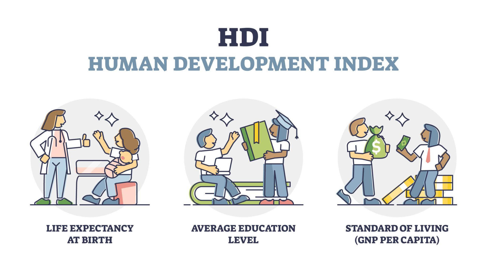
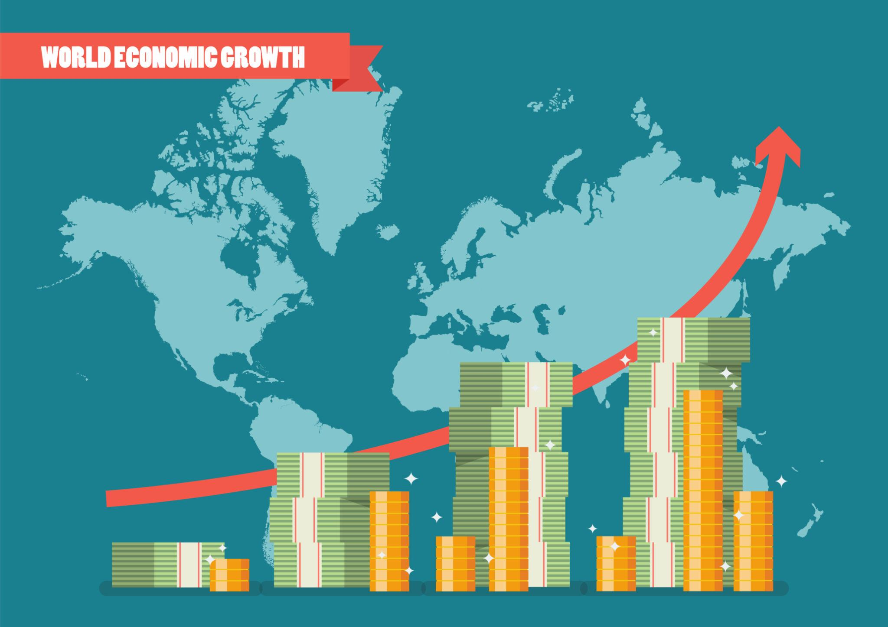
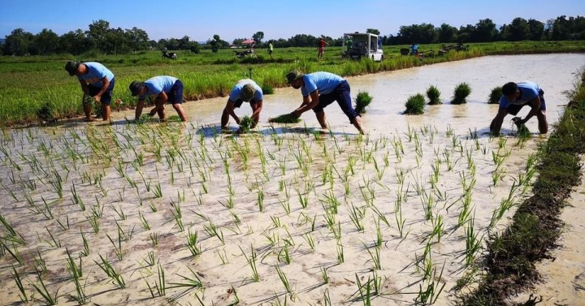
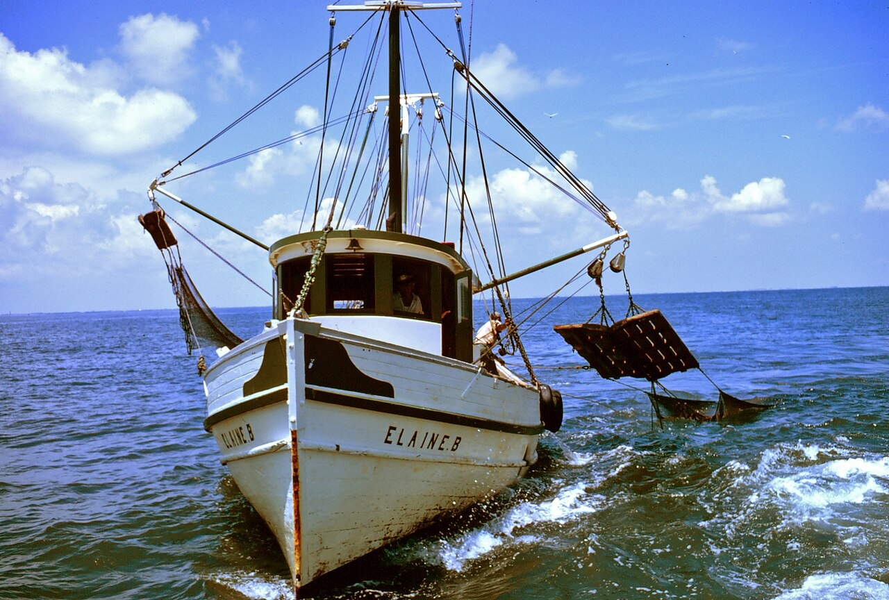
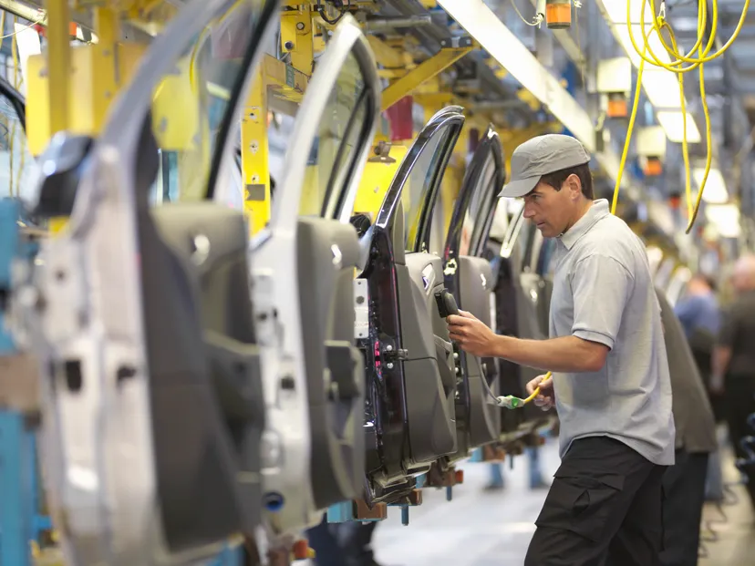
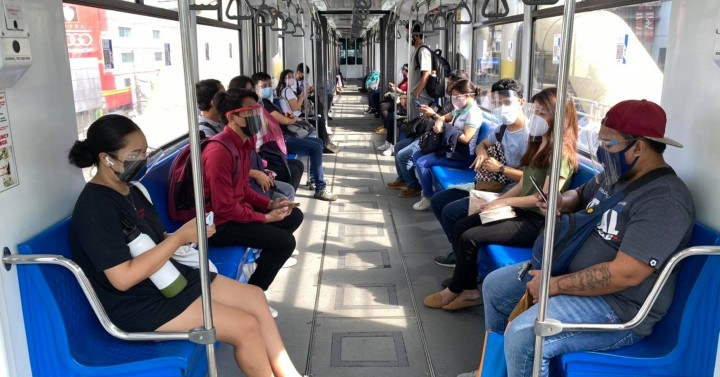
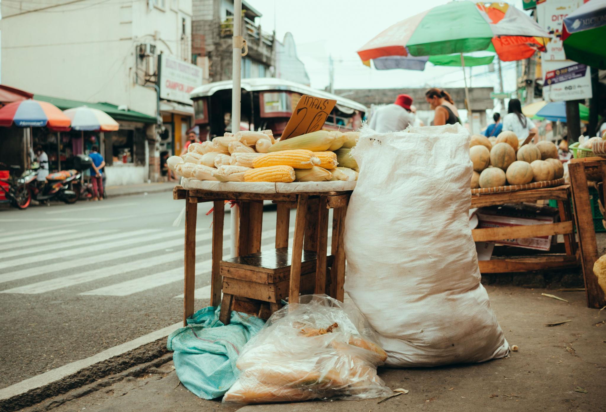
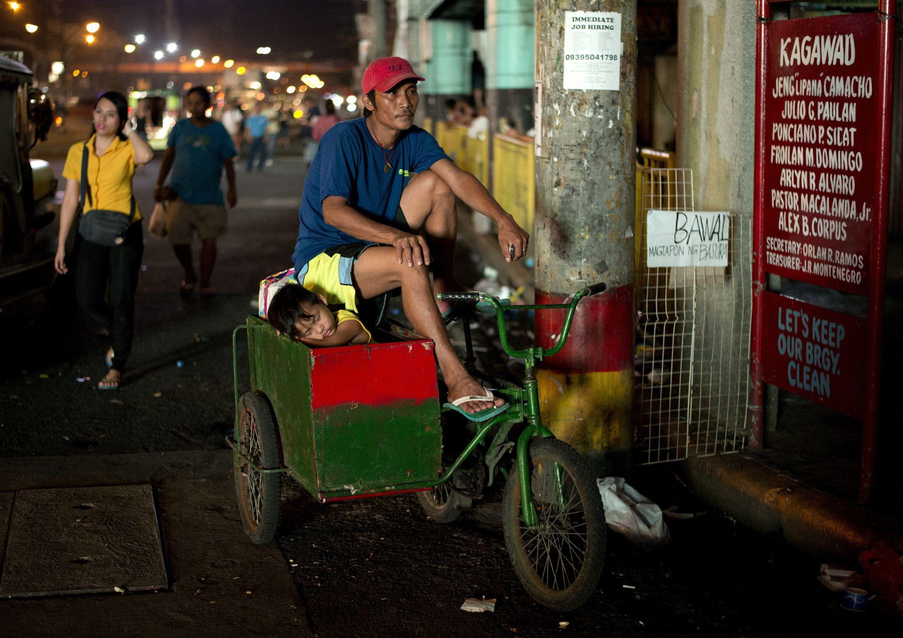
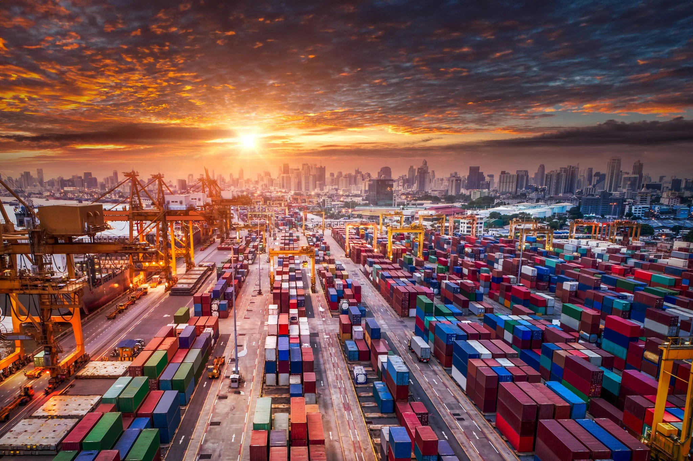
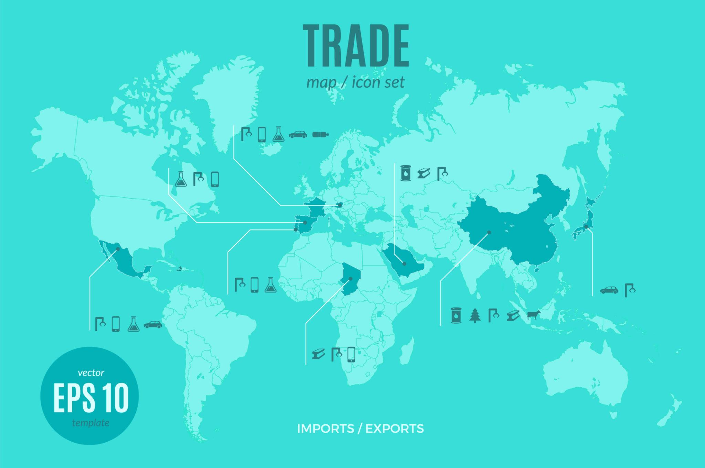

Ang pambansang kaunlaran ay ang kalagayan ng isang bansa kung saan umuunlad ang ekonomiya at gumaganda ang pamumuhay ng mga mamamayan, lalo na ang mga nasa pinakamababang antas ng lipunan. Hindi lamang ito tungkol sa pagtaas ng kita ng bansa kundi pati sa pag-unlad ng kalidad ng buhay ng mga tao. Mga Konsepto ng Pambansang Kaunlaran • Pagbabago Proseso ng pag-iiba o pagkakaroon ng pagbabago sa lipunan at ekonomiya. Nagpapakita ng paglipat mula sa dating kalagayan patungo sa bagong kalagayan. • Pag-unlad Pag-angat ng antas ng pamumuhay ng mga mamamayan. Paglago ng ekonomiya at pagbuti ng kalagayang panlipunan. • Pagsulong Pag-usad tungo sa mga layunin ng isang bansa. Pagpapahusay ng kakayahan, kaalaman, at abilidad ng mga mamamayan. • Ebolusyon Mabagal ngunit tuloy-tuloy na pagbabago sa mahabang panahon. Mga Salik na Nakakatulong sa Kaunlaran • Likas na Yaman Mga yamang nagmumula sa kalikasan tulad ng lupa, tubig, kagubatan, at mineral. • Yamang-Tao Kakayahan, kaalaman, at kasanayan ng mga mamamayan na ginagamit sa paggawa. • Kapital Mga kagamitan, gusali, at pera na ginagamit sa produksyon. • Teknolohiya at Inobasyon Mga makabagong paraan at kagamitan na nagpapabilis sa produksyon at pag-unlad. Mga Palatandaan ng Pag-unlad ng Bansa • Maayos at makatarungang kaayusan sa lipunan • Pagkakaroon ng kasaganaan at kalayaan mula sa kahirapan • Pagkakaroon ng trabaho para sa lahat • Pagtaas ng antas ng pamumuhay • Sapat na serbisyong panlipunan tulad ng edukasyon at kalusugan • Katarungang panlipunan Sukatan ng Kaunlaran • GDP (Gross Domestic Product) Kabuuang halaga ng mga produkto at serbisyong nalilikha sa loob ng bansa. • GNP (Gross National Product) Kabuuang halaga ng produksyon ng mga mamamayan ng bansa kahit nasa ibang bansa. • HDI (Human Development Index) Sukatan ng kaunlaran batay sa kalusugan, edukasyon, at antas ng pamumuhay. Antas ng Kaunlaran ng mga Bansa • Maunlad na Bansa (Developed Countries) Mataas ang GDP, income per capita, at HDI. • Umunuunlad na Bansa (Developing Countries) May mga industriyang umuunlad ngunit hindi pa ganap ang industriyalisasyon. • Papaunlad na Bansa (Underdeveloped Countries) Mababa ang antas ng industriyalisasyon at ekonomiya. Tungkulin ng Mamamayan sa Pag-unlad ng Bansa • Suportahan ang pamahalaan at mga programa nito • Sumunod at gumalang sa mga batas • Alagaan ang kapaligiran at likas na yaman • Tumulong sa paglaban sa korapsyon at katiwalian • Maging produktibo sa trabaho at kabuhayan • Tangkilikin ang mga produktong Pilipino • Magtipid ng enerhiya • Makilahok sa mga gawaing pansibiko at pangkomunidad


Ang sektor ng agrikultura ay tumutukoy sa mga gawaing may kinalaman sa paglinang ng lupa, pagtatanim ng mga halaman, at pagpaparami ng mga hayop upang makalikha ng pagkain at iba pang produkto. Ang salitang agrikultura ay nagmula sa dalawang salita: • Ager – nangangahulugang lupa • Cultura – nangangahulugang paglinang Mga Gawain sa Sektor ng Agrikultura • Pagsasaka • Pangingisda • Paghahayupan • Paggugubat Kahalagahan ng Sektor ng Agrikultura • Pinagmumulan ng pagkain ng mga mamamayan • Nagbibigay ng hilaw na materyales para sa sektor ng industriya • Nagkakaloob ng trabaho sa maraming Pilipino • Nagpapasok ng dolyar sa bansa • Nagiging daan upang makalipat ang manggagawa sa ibang sektor ng ekonomiya Mga Suliranin sa Agrikultura • Pagliit ng lupang sakahan • Kakulangan ng teknolohiya • Kakulangan ng imprastraktura sa kabukiran • Climate change • Polusyon sa yamang-tubig • Pagkaubos ng kagubatan Mga Ahensiyang Tumutulong sa Agrikultura • Department of Agriculture (DA) • Bureau of Fisheries and Aquatic Resources (BFAR) • Bureau of Animal Industry (BAI) • Ecosystem Research and Development Bureau (ERDB)


Ang sektor ng industriya ay tumutukoy sa pagproseso ng mga hilaw na materyales upang makagawa ng mga produktong ginagamit ng tao. Ito ang sektor na nagbabago ng mga likas na yaman at hilaw na sangkap upang maging mga tapos na produkto. Ang sektor na ito ay mahalaga sa pag-unlad ng ekonomiya dahil lumilikha ito ng mga produkto, nagbibigay ng trabaho, at gumagamit ng makabagong teknolohiya sa produksyon. Mga Sub-sektor ng Industriya • Pagmimina (Mining) Pagkuha at pagproseso ng mga yamang mineral mula sa lupa. Ang mga mineral ay maaaring metal, di-metal, o enerhiya. • Pagmamanupaktura (Manufacturing) Proseso ng paggawa ng mga produkto gamit ang makina o manwal na paggawa. Nagkakaroon ng pisikal o kemikal na pagbabago ang mga materyales upang maging bagong produkto. • Konstruksyon (Construction) Tumutukoy sa pagtatayo ng mga gusali, imprastraktura, kalsada, tulay, at iba pang estruktura. • Utilities Nagbibigay ng mahahalagang serbisyo tulad ng tubig, kuryente, at gas. Kahalagahan ng Sektor ng Industriya sa Pambansang Kaunlaran • Tumatanggap ng hilaw na materyales mula sa sektor ng agrikultura • Nagbibigay ng trabaho sa maraming Pilipino • Nagpapasok ng dolyar sa bansa • Gumagamit ng makabagong teknolohiya • Gumagawa ng mga intermediate products na ginagamit sa paggawa ng iba pang produkto Pagkakaugnay ng Agrikultura at Industriya • Ang sektor ng agrikultura ang nagbibigay ng hilaw na materyales sa industriya • Ang sektor ng industriya naman ang gumagawa ng mga kagamitan para sa agrikultura • Nagkakaroon ng pagtutulungan ang dalawang sektor upang mapataas ang produksyon Mga Suliranin sa Industriya • Kakulangan sa pondo at kapital • Matinding kompetisyon mula sa mga dayuhang produkto • Paghina ng lokal na industriya • Pagbabago sa demand ng mga produkto Mga Ahensiyang Tumutulong sa Industriya • Department of Trade and Industry (DTI) • Board of Investments (BOI) • Philippine Economic Zone Authority (PEZA) • Securities and Exchange Commission (SEC)

Ang sektor ng paglilingkod ay tumutukoy sa mga serbisyong sumusuporta sa produksyon, distribusyon, kalakalan, at pagkonsumo ng mga produkto sa loob at labas ng bansa. Ito ay kilala rin bilang tersaryang sektor ng ekonomiya. Mga Uri ng Serbisyo • Transportasyon, Komunikasyon, at Imbakan Kasama rito ang mga pampublikong sasakyan, telepono, internet, at mga bodega. • Kalakalan Pagpapalitan o pagbili at pagbebenta ng mga produkto at serbisyo. • Pananalapi Mga serbisyong may kinalaman sa bangko, insurance, at pamumuhunan. • Real Estate at Paupahang Bahay Mga apartment, condominium, subdivision, at iba pang paupahang gusali. • Serbisyong Pampribado Mga serbisyong ibinibigay ng pribadong sektor. • Serbisyong Pampubliko Mga serbisyong ibinibigay ng pamahalaan tulad ng edukasyon at kalusugan. Kahalagahan ng Sektor ng Paglilingkod • Tinitiyak na makarating sa mamimili ang mga produkto mula sa sakahan o pabrika • Nagbibigay ng trabaho sa maraming mamamayan • Pinapadali ang pag-iimbak at distribusyon ng mga produkto • Nagpapataas ng Gross Domestic Product (GDP) • Nagpapasok ng dolyar sa bansa Mga Ahensiyang Tumutulong sa Sektor ng Paglilingkod • Department of Labor and Employment (DOLE) • Overseas Workers Welfare Administration (OWWA) • Philippine Overseas Employment Administration (POEA) • Technical Education and Skills Development Authority (TESDA) • Professional Regulation Commission (PRC) • Commission on Higher Education (CHED)

Ang impormal na sektor ay sektor ng ekonomiya na walang pormal o kulang sa dokumentong kinakailangan upang magsagawa ng gawaing pang-ekonomiya. Ang kita mula rito ay karaniwang hindi naisasama sa Gross Domestic Product (GDP) ng bansa. Ito ay nagiging paraan ng maraming mamamayan upang magkaroon ng kabuhayan lalo na kung wala silang pormal na trabaho. Halimbawa ng mga kabilang sa Impormal na Sektor • Nagtitinda sa kalsada • Pedicab driver • Karpintero • Hindi rehistradong pampublikong sasakyan • Maliit na negosyo sa bahay Katangian ng Impormal na Sektor • Hindi nakarehistro sa pamahalaan • Hindi nagbabayad ng buwis • Walang pormal na regulasyon sa negosyo Kahalagahan ng Impormal na Sektor • Nagbibigay ng trabaho sa maraming mamamayan • Nagiging alternatibong kabuhayan ng mga Pilipino • Nagbibigay ng murang produkto at serbisyo • Sinasalo ang mga taong walang pormal na trabaho Mga Dahilan Kung Bakit Pumapasok sa Impormal na Sektor • Upang makaiwas sa pagbabayad ng buwis • Upang makaiwas sa komplikadong proseso sa pamahalaan • Dahil hindi nangangailangan ng malaking puhunan • Upang malabanan ang kahirapan Mga Negatibong Epekto • Pagbaba ng nalilikom na buwis ng pamahalaan • Posibleng paglaganap ng ilegal na gawain • Banta sa kaligtasan ng mga mamimili


Ang patakarang panlabas ay tumutukoy sa pakikipagkalakalan ng isang bansa sa ibang bansa. Nagaganap ito dahil walang bansa ang kayang matugunan ang lahat ng pangangailangan nito nang mag-isa. Mga Uri ng Kalakalan • Export (Pagluluwas) Pagpapadala ng mga produkto at serbisyo sa ibang bansa. • Import (Pag-aangkat) Pagbili ng mga produkto mula sa ibang bansa. Mga Dahilan ng Kalakalang Panlabas • Pagkakaiba ng teknolohiya • Pagkakaiba ng likas na yaman • Pagkakaiba sa panlasa ng mamimili • Pagkakaiba sa gastos ng produksyon Mga Patakarang Umaapekto sa Kalakalang Panlabas • Tariff (Taripa) Buwis na ipinapataw sa mga imported na produkto. • Quota (Kota) Limitasyon sa dami ng mga produktong maaaring iangkat. • Subsidy Tulong pinansyal ng pamahalaan sa mga lokal na prodyuser. Balance of Trade (BOT) • Trade Surplus – mas mataas ang export kaysa import • Trade Deficit – mas mataas ang import kaysa export Mga Pandaigdigang Samahang Pang-ekonomiya • World Trade Organization (WTO) • Asia-Pacific Economic Cooperation (APEC) • Association of Southeast Asian Nations (ASEAN) Kabutihan ng Pakikipagkalakalan • Mas maraming produkto ang mapagpipilian • Tumataas ang kalidad ng produkto • Lumalawak ang pamilihan Di-Kabutihan ng Pakikipagkalakalan • Pagdepende sa imported na produkto • Paghina ng lokal na industriya • Pagpasok ng impluwensyang dayuhan

